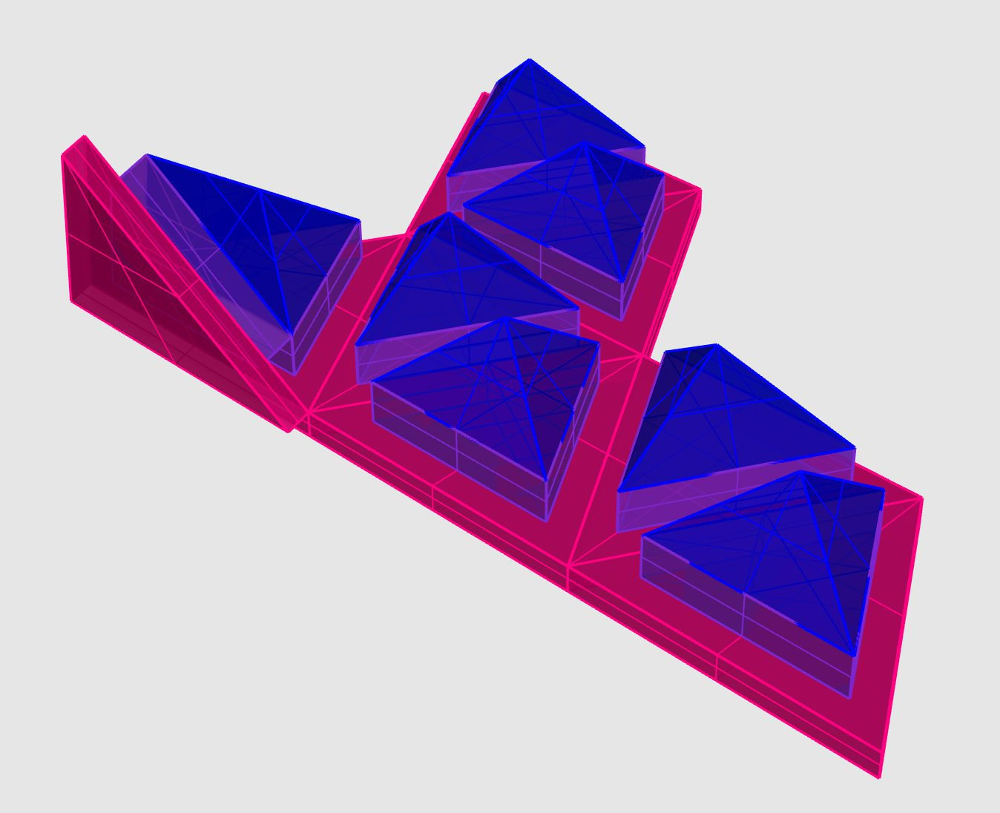

Research and speculative design work for PHYSEE - Sept 2018
Insulating Glass Unit (IGU) examples


Materials
- Glass
- Space bars made from aluminium extruded pieces
- Primary seal made from Polyisobutyl (PIB). It is hot applied on the spacer bars by automatic lines, hand application and prefabricated strips are also possible. PIB is an excellent barrier to moisture vapor, argon gas, or water. But polyisobutylene, or “PIB”, alone lacks enough structural strength to keep the glass lites from shifting or coming apart during transportation and glazing, so it has to be supplemented by a “secondary seal” to provide structural integrity.
- Secondary seal such as Polysulfide has good structural integrity, and, like “PIB”, it serves as a barrier for moisture vapor, argon gas, and water. It is mixed together from two parts and applied wet, curing within 1-4 hours. Silicone can also be used as a secondard seal. It offers very strong adhesion to glass and aluminum, which provides structural integrity for even the largest and heaviest glass components. And silicone will not degrade if exposed to UV rays from the sun, so it is suitable for insulating glass in structural silicone glazing applications. But silicone provides virtually no barrier to water vapor, water, or argon gas.
- Noble gas filling -
Info on sealing stages (taken from here) - The “primary seal”, polyisobutylene, is applied to the regular aluminum or thermally broken aluminum airspace, and that spacer is then positioned between the glass lites. The polyisobutylene
As a secondary seal Polysulfide provides excellent
More resources - Paper on seals,
CAD
I had a go at CADing a simplfied version of a standard IGU configuration.
This sequence of images shows the order of assembly (I have't included the dessicant in this sequence or ventilation holes in the spacer):
- Extruded aluminium spacers laid out
- Corner pieces connect spacers together
- Primary PIB seal applied to the surface of spacer and corner assembly
- Glass adherred to the frame
- Secondary polysulfide seal added
Eagle to Fusion 360
This section demonstrates the Eagle to Fusion integration for circuit boards. I designed a simple phototransistor circuit using an example from this webpage. This circuit is designed to output data via a FTDI cable which obviously isn't a decent solution for a power window. I'd need to do more work to add the 3D files for the actual packages, for now I've just used the default blocks. The images show the schematic and board layout created in Eagle and the 3D rendering of the board that was pushed to Fusion. The board is 15mm wide so just big enough to fit within the cavity of an IGU.
Useful links and guidance:
Engineering drawings from Fusion
Very basic drawing but just getting a quick example out.
Simulating thermal expansion in Fusion
Applicable past projects
Kelvin reconfigurable structure

Molding and casting - Link

Resin Transfer Molding - Link